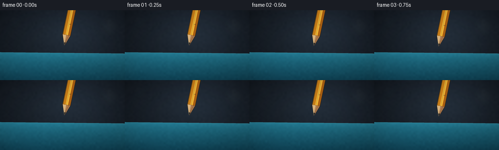
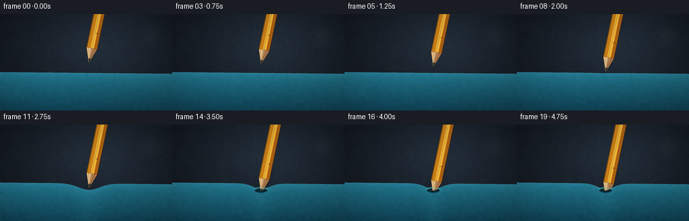

CODING AGENTS AS PIXEL WORLD MODELS
traex/GPT-5.6-Sol · phygen_022
点击播放 · 原生 RGB 像素
逐轮保存的候选
回放视频、检查图与代码变化。
每份候选均可单独播放。实际图片检查记录在下方工具轨迹中。
候选 01播放与检查图
点击播放 · 原生 RGB 像素


展开代码变化
--- 上一保存版本
+++ 本次保存版本
@@ -0,0 +1,220 @@
+from pathlib import Path
+import math
+import numpy as np
+from PIL import Image, ImageDraw, ImageFilter
+import artifact_io
+
+# Deterministic, hand-rendered macro scene. Render large and downsample for clean edges.
+W, H, N, S = 256, 144, 20, 4
+RW, RH = W*S, H*S
+rng = np.random.default_rng(22022)
+
+
+def smoothstep(a, b, x):
+ t = np.clip((x-a)/(b-a), 0.0, 1.0)
+ return t*t*(3.0-2.0*t)
+
+
+def ellipse_layer(box, fill, blur=0):
+ im = Image.new('RGBA', (RW, RH), (0,0,0,0))
+ d = ImageDraw.Draw(im)
+ d.ellipse(tuple(int(v*S) for v in box), fill=fill)
+ if blur:
+ im = im.filter(ImageFilter.GaussianBlur(blur*S))
+ return im
+
+
+def draw_bezier(draw, points, fill, width):
+ # cubic Bezier
+ p0,p1,p2,p3 = [np.array(p, float)*S for p in points]
+ pts=[]
+ for t in np.linspace(0,1,45):
+ q=(1-t)**3*p0+3*(1-t)**2*t*p1+3*(1-t)*t*t*p2+t**3*p3
+ pts.append(tuple(q))
+ draw.line(pts, fill=fill, width=max(1,int(width*S)), joint='curve')
+
+
+def polygon(draw, pts, **kw):
+ draw.polygon([(int(x*S),int(y*S)) for x,y in pts], **kw)
+
+
+def line(draw, pts, **kw):
+ if 'width' in kw: kw['width'] = max(1, int(kw['width']*S))
+ draw.line([(int(x*S),int(y*S)) for x,y in pts], **kw)
+
+# Static low-frequency texture, so only the physical action moves.
+small_noise = rng.normal(0, 1, (36,64)).astype(np.float32)
+noise_im = Image.fromarray(np.uint8(np.clip(small_noise*25+128,0,255))).resize((RW,RH), Image.Resampling.BICUBIC)
+noise_field = (np.asarray(noise_im).astype(np.float32)-128.0)/25.0
+
+yy, xx = np.mgrid[0:RH, 0:RW]
+frames=[]
+for fi in range(N):
+ t = fi/(N-1)
+ motion = smoothstep(0, 1, t)
+ tip_x = 132.0
+ tip_y = 72.5 + 36.0*motion
+ contact = smoothstep(84.5, 89.0, tip_y)
+ puncture = smoothstep(97.0, 102.5, tip_y)
+
+ # Tight sheet horizon, bowed down by the point before it parts.
+ base = 88.0 + 0.010*(np.arange(RW)/S-128.0)
+ raw_depth = max(0.0, tip_y-86.0) + 0.8
+ depth = (1-puncture)*min(raw_depth, 12.7) + puncture*8.1
+ sigma = 22.0 - 5.0*puncture
+ prof = base + contact*depth*np.exp(-((np.arange(RW)/S-tip_x)/sigma)**2)
+ # Small sharp collar tugged down around the penetrating pencil.
+ prof += puncture*1.9*np.exp(-((np.arange(RW)/S-tip_x)/5.8)**2)
+ profR = prof*S
+
+ # Dark studio background with a gentle spotlight and vignette.
+ X=xx/S; Y=yy/S
+ radial=np.sqrt(((X-134)/190)**2+((Y-52)/105)**2)
+ bg = np.empty((RH,RW,3), dtype=np.float32)
+ bg[:,:,0]=30-12*radial + 6*np.exp(-((X-155)**2+(Y-38)**2)/7000)
+ bg[:,:,1]=39-16*radial + 8*np.exp(-((X-155)**2+(Y-38)**2)/7000)
+ bg[:,:,2]=48-18*radial + 11*np.exp(-((X-155)**2+(Y-38)**2)/7000)
+ bg += noise_field[:,:,None]*0.8
+ bg=np.clip(bg,6,70).astype(np.uint8)
+ scene=Image.fromarray(bg,'RGB').convert('RGBA')
+
+ # Soft out-of-focus workshop glints.
+ bokeh=Image.new('RGBA',(RW,RH),(0,0,0,0)); bd=ImageDraw.Draw(bokeh)
+ for bx,by,br,col in [(29,25,11,(102,132,141,18)),(224,34,17,(158,176,165,13)),(195,68,7,(123,151,155,13)),(65,59,6,(184,157,110,10))]:
+ bd.ellipse(((bx-br)*S,(by-br)*S,(bx+br)*S,(by+br)*S),fill=col)
+ bokeh=bokeh.filter(ImageFilter.GaussianBlur(8*S)); scene=Image.alpha_composite(scene,bokeh)
+
+ # Rubber sheet: blue latex plane with slight texture and a visible elastic lip.
+ profile_map=np.repeat(profR[None,:],RH,axis=0)
+ below=yy>=profile_map
+ depth_from=(yy-profile_map)/S
+ # cool highlight at the grazing horizon, deeper saturated foreground
+ c0=np.array([32.,111.,132.]); c1=np.array([15.,65.,83.])
+ z=np.clip(depth_from/56.0,0,1)[:,:,None]
+ rubber=c0*(1-z)+c1*z
+ graze=18*np.exp(-np.maximum(depth_from,0)[:,:,None]/7.5)
+ rubber += graze*np.array([0.32,0.70,0.82])
+ rubber += noise_field[:,:,None]*np.array([0.9,1.5,1.6])
+ # broad reflected studio strip
+ rubber += (7*np.exp(-((X-55)/90)**2)[:,:,None])*np.array([.15,.65,.9])
+ rgba=np.zeros((RH,RW,4),dtype=np.uint8)
+ rgba[:,:,:3]=np.clip(rubber,0,255).astype(np.uint8)
+ rgba[:,:,3]=below.astype(np.uint8)*255
+ sheet=Image.fromarray(rgba,'RGBA')
+ scene=Image.alpha_composite(scene,sheet)
+
+ # Subtle cast shadow tightens as the pencil approaches.
+ gap=max(0, 87-tip_y)
+ sh_alpha=int(20+45*contact)
+ shadow=ellipse_layer((tip_x-27+gap*.25, 88+depth*.25, tip_x+33+gap*.25, 97+depth*.42), (1,10,15,sh_alpha), 4.2+gap*.10)
+ # shadow should only fall on sheet
+ shadow_arr=np.asarray(shadow).copy(); shadow_arr[:,:,3]=(shadow_arr[:,:,3].astype(np.uint16)*below//255).astype(np.uint8)
+ scene=Image.alpha_composite(scene,Image.fromarray(shadow_arr,'RGBA'))
+
+ # Elastic strain rings and wrinkles on the sheet plane.
+ strain=Image.new('RGBA',(RW,RH),(0,0,0,0)); sd=ImageDraw.Draw(strain)
+ if contact>0.02:
+ a=int(62*contact*(1-.25*puncture))
+ # elliptical highlights around the dimple, interrupted at the pencil
+ for rad, voff, al in [(34,5,0.42),(48,9,0.24),(65,13,0.14)]:
+ box=((tip_x-rad)*S,(89+voff-rad*.12)*S,(tip_x+rad)*S,(89+voff+rad*.12)*S)
+ sd.arc(box, 8, 166, fill=(97,194,207,int(a*al)), width=max(1,int(S*.7)))
+ sd.arc(box, 194, 342, fill=(2,41,58,int(a*al*.9)), width=max(1,int(S*.8)))
+ wrinkle_alpha=int(60*contact*(.5+.5*puncture))
+ wrinkles=[
+ ((128,96),(110,100),(99,101),(83,102)),
+ ((137,96),(153,99),(169,102),(188,101)),
+ ((128,98),(117,108),(108,114),(99,124)),
+ ((139,98),(150,108),(156,117),(163,130)),
+ ]
+ for j,ps in enumerate(wrinkles):
+ draw_bezier(sd,ps,(3,46,61,wrinkle_alpha//2),1.2)
+ # adjacent specular ridge
+ shifted=tuple((x,y-1.1) for x,y in ps)
+ draw_bezier(sd,shifted,(74,161,179,wrinkle_alpha//3),.65)
+ # clip strain to sheet
+ sa=np.asarray(strain).copy(); sa[:,:,3]=(sa[:,:,3].astype(np.uint16)*below//255).astype(np.uint8)
+ scene=Image.alpha_composite(scene,Image.fromarray(sa,'RGBA'))
+
+ # Puncture: a compressed dark oval and a thin, bright stretched rim.
+ if puncture>0.01:
+ hole=Image.new('RGBA',(RW,RH),(0,0,0,0)); hd=ImageDraw.Draw(hole)
+ cy=float(np.interp(tip_x*S,np.arange(RW),profR))/S
+ hw=4.0+5.6*puncture; hh=1.2+2.4*puncture
+ hd.ellipse(((tip_x-hw)*S,(cy-hh)*S,(tip_x+hw)*S,(cy+hh)*S),fill=(2,20,25,int(210*puncture)))
+ hd.arc(((tip_x-hw-1)*S,(cy-hh-1)*S,(tip_x+hw+1)*S,(cy+hh+1)*S),185,355,fill=(91,206,212,int(210*puncture)),width=max(1,int(.8*S)))
+ scene=Image.alpha_composite(scene,hole)
+
+ # Pencil geometry (pointing down-left), complete first, then occluded by latex plane.
+ pencil=Image.new('RGBA',(RW,RH),(0,0,0,0)); pd=ImageDraw.Draw(pencil)
+ u=np.array([0.205,-0.979]) # from tip toward the barrel
+ n=np.array([0.979,0.205])
+ P=np.array([tip_x,tip_y]); B=P+u*22.0; T=B+u*112.0
+ r=7.8
+ L0=B-n*r; R0=B+n*r; LT=T-n*r; RT=T+n*r
+ # Fine dark silhouette
+ polygon(pd,[LT-0.8*n,RT+0.8*n,R0+0.8*n,P,L0-0.8*n],fill=(38,29,19,235))
+ # lacquered yellow hexagonal barrel, three facets
+ polygon(pd,[LT,L0,B-n*1.8,T-n*1.8],fill=(200,126,24,255))
+ polygon(pd,[T-n*1.8,B-n*1.8,B+n*3.1,T+n*3.1],fill=(244,181,49,255))
+ polygon(pd,[T+n*3.1,B+n*3.1,R0,RT],fill=(170,96,19,255))
+ # narrow glossy stripe and worn edge
+ line(pd,[tuple(T-n*.25),tuple(B-n*.25)],fill=(255,215,95,150),width=.75)
+ line(pd,[tuple(LT+n*.45),tuple(L0+n*.45)],fill=(112,66,20,125),width=.65)
+ # wood cone
+ polygon(pd,[L0,R0,P],fill=(205,157,100,255))
+ polygon(pd,[L0,B-n*.3,P],fill=(232,191,132,255))
+ polygon(pd,[B-n*.3,R0,P],fill=(174,121,74,255))
+ # wood grain converging on the graphite
+ Q=P+u*6.2
+ line(pd,[tuple(B-n*5.2),tuple(Q-n*.8)],fill=(135,87,52,130),width=.45)
+ line(pd,[tuple(B+n*4.7),tuple(Q+n*.65)],fill=(115,74,48,140),width=.5)
+ line(pd,[tuple(B-n*1.8),tuple(Q-n*.2)],fill=(247,213,164,125),width=.5)
+ # graphite point
+ polygon(pd,[tuple(Q-n*1.55),tuple(Q+n*1.55),tuple(P)],fill=(31,34,35,255))
+ line(pd,[tuple(Q-n*.7),tuple(P)],fill=(95,98,94,150),width=.45)
+ # Ferrule-like paint edge at sharpened end
+ line(pd,[tuple(L0),tuple(R0)],fill=(103,61,22,190),width=.65)
+ # tiny printed HB on barrel
+ if B[1] > 38:
+ label_pos=B+u*24+n*1.0
+ pd.text((int(label_pos[0]*S),int(label_pos[1]*S)),"HB",fill=(94,56,20,120),stroke_width=0)
+
+ # Occlude only the part physically below the membrane; before contact the entire tip remains visible.
+ pa=np.asarray(pencil).copy()
+ visible = yy <= (profile_map + 0.35*S)
+ pa[:,:,3]=(pa[:,:,3].astype(np.uint16)*visible//1).astype(np.uint8)
+ scene=Image.alpha_composite(scene,Image.fromarray(pa,'RGBA'))
+
+ # Foreground collar clings tightly over the cone after rupture.
+ if puncture>0.01:
+ rim=Image.new('RGBA',(RW,RH),(0,0,0,0)); rd=ImageDraw.Draw(rim)
+ cy=float(np.interp(tip_x*S,np.arange(RW),profR))/S
+ hw=5.4+3.6*puncture
+ rd.arc(((tip_x-hw)*S,(cy-2.5)*S,(tip_x+hw)*S,(cy+3.8)*S),5,176,fill=(8,59,73,int(240*puncture)),width=max(1,int(1.55*S)))
+ rd.arc(((tip_x-hw)*S,(cy-3.4)*S,(tip_x+hw)*S,(cy+2.0)*S),190,350,fill=(104,216,216,int(195*puncture)),width=max(1,int(.8*S)))
+ scene=Image.alpha_composite(scene,rim)
+ # A faint subsurface point-shadow makes increasing penetration legible.
+ sub=Image.new('RGBA',(RW,RH),(0,0,0,0)); sud=ImageDraw.Draw(sub)
+ below_len=max(0.0,tip_y-cy)
+ if below_len>0:
+ polygon(sud,[(tip_x-1.8,cy+1),(tip_x+2.0,cy+1),(tip_x,cy+min(13,below_len+4))],fill=(4,36,47,int(45*puncture)))
+ sub=sub.filter(ImageFilter.GaussianBlur(1.8*S))
+ scene=Image.alpha_composite(scene,sub)
+
+ # Delicate horizon highlight emphasizes the stretched outer layer.
+ lip=Image.new('RGBA',(RW,RH),(0,0,0,0)); ld=ImageDraw.Draw(lip)
+ lip_pts=[(x*S,prof[int(x*S)]*S) for x in np.linspace(0,W-1,280)]
+ ld.line(lip_pts,fill=(96,193,201,110),width=max(1,int(.55*S)))
+ scene=Image.alpha_composite(scene,lip)
+
+ # Final optics: mild highlight, vignette, downsample.
+ arr=np.asarray(scene.convert('RGB')).astype(np.float32)
+ vign=np.clip(1-0.16*(((X-128)/154)**2+((Y-72)/105)**2),.72,1.0)
+ arr*=vign[:,:,None]
+ out=Image.fromarray(np.uint8(np.clip(arr,0,255))).resize((W,H),Image.Resampling.LANCZOS)
+ frames.append(np.asarray(out,dtype=np.uint8))
+
+frames=np.stack(frames,axis=0)
+assert frames.shape==(20,144,256,3) and frames.dtype==np.uint8
+artifact_io.save(frames, Path(__file__).resolve().parent)
可观测工具轨迹
实际执行的命令与返回图片。
命令 1exit 0
/bin/bash -lc "cat prompt.txt && printf '\\n--- GENERATION_RULES ---\\n' && cat GENERATION_RULES.md && printf '\\n--- TASK_SPEC ---\\n' && cat task_spec.json"
命令 2exit 0
/bin/bash -lc "find . -maxdepth 2 -type f -printf '%p\\n' | sort | sed -n '1,200p'; printf '\\nTools:\\n'; command -v ffmpeg || true; command -v blender || true; command -v python3 || true"
命令 3exit 0
/bin/bash -lc 'cat artifact_io.py'
命令 4exit 0
/bin/bash -lc "cat > generate.py <<'PY'
from pathlib import Path
import math
import numpy as np
from PIL import Image, ImageDraw, ImageFilter
import artifact_io
# Deterministic, hand-rendered macro scene. Render large and downsample for clean edges.
W, H, N, S = 256, 144, 20, 4
RW, RH = W*S, H*S
rng = np.random.default_rng(22022)
def smoothstep(a, b, x):
t = np.clip((x-a)/(b-a), 0.0, 1.0)
return t*t*(3.0-2.0*t)
def ellipse_layer(box, fill, blur=0):
im = Image.new('RGBA', (RW, RH), (0,0,0,0))
d = ImageDraw.Draw(im)
d.ellipse(tuple(int(v*S) for v in box), fill=fill)
if blur:
im = im.filter(ImageFilter.GaussianBlur(blur*S))
return im
def draw_bezier(draw, points, fill, width):
# cubic Bezier
p0,p1,p2,p3 = [np.array(p, float)*S for p in points]
pts=[]
for t in np.linspace(0,1,45):
q=(1-t)**3*p0+3*(1-t)**2*t*p1+3*(1-t)*t*t*p2+t**3*p3
pts.append(tuple(q))
draw.line(pts, fill=fill, width=max(1,int(width*S)), joint='curve')
def polygon(draw, pts, **kw):
draw.polygon([(int(x*S),int(y*S)) for x,y in pts], **kw)
def line(draw, pts, **kw):
if 'width' in kw: kw['width'] = max(1, int(kw['width']*S))
draw.line([(int(x*S),int(y*S)) for x,y in pts], **kw)
# Static low-frequency texture, so only the physical action moves.
small_noise = rng.normal(0, 1, (36,64)).astype(np.float32)
noise_im = Image.fromarray(np.uint8(np.clip(small_noise*25+128,0,255))).resize((RW,RH), Image.Resampling.BICUBIC)
noise_field = (np.asarray(noise_im).astype(np.float32)-128.0)/25.0
yy, xx = np.mgrid[0:RH, 0:RW]
frames=[]
for fi in range(N):
t = fi/(N-1)
motion = smoothstep(0, 1, t)
tip_x = 132.0
tip_y = 72.5 + 36.0*motion
contact = smoothstep(84.5, 89.0, tip_y)
puncture = smoothstep(97.0, 102.5, tip_y)
# Tight sheet horizon, bowed down by the point before it parts.
base = 88.0 + 0.010*(np.arange(RW)/S-128.0)
raw_depth = max(0.0, tip_y-86.0) + 0.8
depth = (1-puncture)*min(raw_depth, 12.7) + puncture*8.1
sigma = 22.0 - 5.0*puncture
prof = base + contact*depth*np.exp(-((np.arange(RW)/S-tip_x)/sigma)**2)
# Small sharp collar tugged down around the penetrating pencil.
prof += puncture*1.9*np.exp(-((np.arange(RW)/S-tip_x)/5.8)**2)
profR = prof*S
# Dark studio background with a gentle spotlight and vignette.
X=xx/S; Y=yy/S
radial=np.sqrt(((X-134)/190)**2+((Y-52)/105)**2)
bg = np.empty((RH,RW,3), dtype=np.float32)
bg[:,:,0]=30-12*radial + 6*np.exp(-((X-155)**2+(Y-38)**2)/7000)
bg[:,:,1]=39-16*radial + 8*np.exp(-((X-155)**2+(Y-38)**2)/7000)
bg[:,:,2]=48-18*radial + 11*np.exp(-((X-155)**2+(Y-38)**2)/7000)
bg += noise_field[:,:,None]*0.8
bg=np.clip(bg,6,70).astype(np.uint8)
scene=Image.fromarray(bg,'RGB').convert('RGBA')
# Soft out-of-focus workshop glints.
bokeh=Image.new('RGBA',(RW,RH),(0,0,0,0)); bd=ImageDraw.Draw(bokeh)
for bx,by,br,col in [(29,25,11,(102,132,141,18)),(224,34,17,(158,176,165,13)),(195,68,7,(123,151,155,13)),(65,59,6,(184,157,110,10))]:
bd.ellipse(((bx-br)*S,(by-br)*S,(bx+br)*S,(by+br)*S),fill=col)
bokeh=bokeh.filter(ImageFilter.GaussianBlur(8*S)); scene=Image.alpha_composite(scene,bokeh)
# Rubber sheet: blue latex plane with slight texture and a visible elastic lip.
profile_map=np.repeat(profR[None,:],RH,axis=0)
below=yy>=profile_map
depth_from=(yy-profile_map)/S
# cool highlight at the grazing horizon, deeper saturated foreground
c0=np.array([32.,111.,132.]); c1=np.array([15.,65.,83.])
z=np.clip(depth_from/56.0,0,1)[:,:,None]
rubber=c0*(1-z)+c1*z
graze=18*np.exp(-np.maximum(depth_from,0)[:,:,None]/7.5)
rubber += graze*np.array([0.32,0.70,0.82])
rubber += noise_field[:,:,None]*np.array([0.9,1.5,1.6])
# broad reflected studio strip
rubber += (7*np.exp(-((X-55)/90)**2)[:,:,None])*np.array([.15,.65,.9])
rgba=np.zeros((RH,RW,4),dtype=np.uint8)
rgba[:,:,:3]=np.clip(rubber,0,255).astype(np.uint8)
rgba[:,:,3]=below.astype(np.uint8)*255
sheet=Image.fromarray(rgba,'RGBA')
scene=Image.alpha_composite(scene,sheet)
# Subtle cast shadow tightens as the pencil approaches.
gap=max(0, 87-tip_y)
sh_alpha=int(20+45*contact)
shadow=ellipse_layer((tip_x-27+gap*.25, 88+depth*.25, tip_x+33+gap*.25, 97+depth*.42), (1,10,15,sh_alpha), 4.2+gap*.10)
# shadow should only fall on sheet
shadow_arr=np.asarray(shadow).copy(); shadow_arr[:,:,3]=(shadow_arr[:,:,3].astype(np.uint16)*below//255).astype(np.uint8)
scene=Image.alpha_composite(scene,Image.fromarray(shadow_arr,'RGBA'))
# Elastic strain rings and wrinkles on the sheet plane.
strain=Image.new('RGBA',(RW,RH),(0,0,0,0)); sd=ImageDraw.Draw(strain)
if contact>0.02:
a=int(62*contact*(1-.25*puncture))
# elliptical highlights around the dimple, interrupted at the pencil
for rad, voff, al in [(34,5,0.42),(48,9,0.24),(65,13,0.14)]:
box=((tip_x-rad)*S,(89+voff-rad*.12)*S,(tip_x+rad)*S,(89+voff+rad*.12)*S)
sd.arc(box, 8, 166, fill=(97,194,207,int(a*al)), width=max(1,int(S*.7)))
sd.arc(box, 194, 342, fill=(2,41,58,int(a*al*.9)), width=max(1,int(S*.8)))
wrinkle_alpha=int(60*contact*(.5+.5*puncture))
wrinkles=[
((128,96),(110,100),(99,101),(83,102)),
((137,96),(153,99),(169,102),(188,101)),
((128,98),(117,108),(108,114),(99,124)),
((139,98),(150,108),(156,117),(163,130)),
]
for j,ps in enumerate(wrinkles):
draw_bezier(sd,ps,(3,46,61,wrinkle_alpha//2),1.2)
# adjacent specular ridge
shifted=tuple((x,y-1.1) for x,y in ps)
draw_bezier(sd,shifted,(74,161,179,wrinkle_alpha//3),.65)
# clip strain to sheet
sa=np.asarray(strain).copy(); sa[:,:,3]=(sa[:,:,3].astype(np.uint16)*below//255).astype(np.uint8)
scene=Image.alpha_composite(scene,Image.fromarray(sa,'RGBA'))
# Puncture: a compressed dark oval and a thin, bright stretched rim.
if puncture>0.01:
hole=Image.new('RGBA',(RW,RH),(0,0,0,0)); hd=ImageDraw.Draw(hole)
cy=float(np.interp(tip_x*S,np.arange(RW),profR))/S
hw=4.0+5.6*puncture; hh=1.2+2.4*puncture
hd.ellipse(((tip_x-hw)*S,(cy-hh)*S,(tip_x+hw)*S,(cy+hh)*S),fill=(2,20,25,int(210*puncture)))
hd.arc(((tip_x-hw-1)*S,(cy-hh-1)*S,(tip_x+hw+1)*S,(cy+hh+1)*S),185,355,fill=(91,206,212,int(210*puncture)),width=max(1,int(.8*S)))
scene=Image.alpha_composite(scene,hole)
# Pencil geometry (pointing down-left), complete first, then occluded by latex plane.
pencil=Image.new('RGBA',(RW,RH),(0,0,0,0)); pd=ImageDraw.Draw(pencil)
u=np.array([0.205,-0.979]) # from tip toward the barrel
n=np.array([0.979,0.205])
P=np.array([tip_x,tip_y]); B=P+u*22.0; T=B+u*112.0
r=7.8
L0=B-n*r; R0=B+n*r; LT=T-n*r; RT=T+n*r
# Fine dark silhouette
polygon(pd,[LT-0.8*n,RT+0.8*n,R0+0.8*n,P,L0-0.8*n],fill=(38,29,19,235))
# lacquered yellow hexagonal barrel, three facets
polygon(pd,[LT,L0,B-n*1.8,T-n*1.8],fill=(200,126,24,255))
polygon(pd,[T-n*1.8,B-n*1.8,B+n*3.1,T+n*3.1],fill=(244,181,49,255))
polygon(pd,[T+n*3.1,B+n*3.1,R0,RT],fill=(170,96,19,255))
# narrow glossy stripe and worn edge
line(pd,[tuple(T-n*.25),tuple(B-n*.25)],fill=(255,215,95,150),width=.75)
line(pd,[tuple(LT+n*.45),tuple(L0+n*.45)],fill=(112,66,20,125),width=.65)
# wood cone
polygon(pd,[L0,R0,P],fill=(205,157,100,255))
polygon(pd,[L0,B-n*.3,P],fill=(232,191,132,255))
polygon(pd,[B-n*.3,R0,P],fill=(174,121,74,255))
# wood grain converging on the graphite
Q=P+u*6.2
line(pd,[tuple(B-n*5.2),tuple(Q-n*.8)],fill=(135,87,52,130),width=.45)
line(pd,[tuple(B+n*4.7),tuple(Q+n*.65)],fill=(115,74,48,140),width=.5)
line(pd,[tuple(B-n*1.8),tuple(Q-n*.2)],fill=(247,213,164,125),width=.5)
# graphite point
polygon(pd,[tuple(Q-n*1.55),tuple(Q+n*1.55),tuple(P)],fill=(31,34,35,255))
line(pd,[tuple(Q-n*.7),tuple(P)],fill=(95,98,94,150),width=.45)
# Ferrule-like paint edge at sharpened end
line(pd,[tuple(L0),tuple(R0)],fill=(103,61,22,190),width=.65)
# tiny printed HB on barrel
if B[1] > 38:
label_pos=B+u*24+n*1.0
pd.text((int(label_pos[0]*S),int(label_pos[1]*S)),\"HB\",fill=(94,56,20,120),stroke_width=0)
# Occlude only the part physically below the membrane; before contact the entire tip remains visible.
pa=np.asarray(pencil).copy()
visible = yy <= (profile_map + 0.35*S)
pa[:,:,3]=(pa[:,:,3].astype(np.uint16)*visible//1).astype(np.uint8)
scene=Image.alpha_composite(scene,Image.fromarray(pa,'RGBA'))
# Foreground collar clings tightly over the cone after rupture.
if puncture>0.01:
rim=Image.new('RGBA',(RW,RH),(0,0,0,0)); rd=ImageDraw.Draw(rim)
cy=float(np.interp(tip_x*S,np.arange(RW),profR))/S
hw=5.4+3.6*puncture
rd.arc(((tip_x-hw)*S,(cy-2.5)*S,(tip_x+hw)*S,(cy+3.8)*S),5,176,fill=(8,59,73,int(240*puncture)),width=max(1,int(1.55*S)))
rd.arc(((tip_x-hw)*S,(cy-3.4)*S,(tip_x+hw)*S,(cy+2.0)*S),190,350,fill=(104,216,216,int(195*puncture)),width=max(1,int(.8*S)))
scene=Image.alpha_composite(scene,rim)
# A faint subsurface point-shadow makes increasing penetration legible.
sub=Image.new('RGBA',(RW,RH),(0,0,0,0)); sud=ImageDraw.Draw(sub)
below_len=max(0.0,tip_y-cy)
if below_len>0:
polygon(sud,[(tip_x-1.8,cy+1),(tip_x+2.0,cy+1),(tip_x,cy+min(13,below_len+4))],fill=(4,36,47,int(45*puncture)))
sub=sub.filter(ImageFilter.GaussianBlur(1.8*S))
scene=Image.alpha_composite(scene,sub)
# Delicate horizon highlight emphasizes the stretched outer layer.
lip=Image.new('RGBA',(RW,RH),(0,0,0,0)); ld=ImageDraw.Draw(lip)
lip_pts=[(x*S,prof[int(x*S)]*S) for x in np.linspace(0,W-1,280)]
ld.line(lip_pts,fill=(96,193,201,110),width=max(1,int(.55*S)))
scene=Image.alpha_composite(scene,lip)
# Final optics: mild highlight, vignette, downsample.
arr=np.asarray(scene.convert('RGB')).astype(np.float32)
vign=np.clip(1-0.16*(((X-128)/154)**2+((Y-72)/105)**2),.72,1.0)
arr*=vign[:,:,None]
out=Image.fromarray(np.uint8(np.clip(arr,0,255))).resize((W,H),Image.Resampling.LANCZOS)
frames.append(np.asarray(out,dtype=np.uint8))
frames=np.stack(frames,axis=0)
assert frames.shape==(20,144,256,3) and frames.dtype==np.uint8
artifact_io.save(frames, Path(__file__).resolve().parent)
PY
python3 generate.py"命令 5exit 0
/bin/bash -lc "python3 - <<'PY'
import numpy as np
from PIL import Image
z=np.load('pixels.npz')['pixels']
print(z.shape,z.dtype,hex(int(z.min())),hex(int(z.max())))
a=np.stack([np.asarray(Image.open(f'frames/{i:02d}.png')) for i in range(20)])
print(a.shape,a.dtype, 'rgb=',Image.open('frames/00.png').mode,'mean frame deltas=',np.abs(np.diff(a.astype(float),axis=0)).mean(axis=(1,2,3)).round(3))
PY
ls -lh pixels.npz index.html inspection.png generate.py"视觉工具实际返回图片 1

视觉工具实际返回图片 2
视觉工具实际返回图片 3
保存候选 1 份；完成命令 5 次；可验证图片返回 3 张。原始 API 响应与完整日志保留在本地。